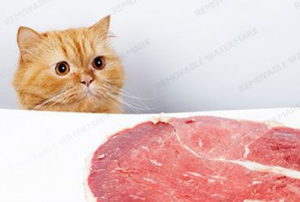
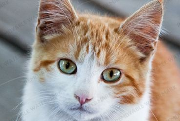

Добрый доктор
Вы взяли домой котенка. И вдруг оказывается, что это — член семьи. Причем, наверно, самый главный, всеми горячо любимый. А он, в свою очередь, любит Вас.Ну, и кто теперь за него в ответе? Кто должен смотреть, чтобы котенок рос здоровым, жизнерадостным и счастливым? Правильно, — Вы! Именно Вам следует заложить с самого детства и поддерживать на протяжении всей жизни здоровье Вашего питомца.
ЧИТАТЬ ПОЛНОСТЬЮПолезная информация
-
Не давайте кошке никаких лекарств, пока вы поговорили с ветеринаром, чтобы быть уверенным, что это нужное лекарство.
-
Кошкам нужно несколько различных видов питательных веществ, чтобы выжить: белки, жиры, витамины, минералы и вода.
-
Уход за кошкой несложен и не отнимет у Вас чересчур много времени, но необходимо знать, что требуется животному для нормальной жизни.
Популярные статьи
-

Чем кормить котенка в 1 месяц
В вашем доме появился маленький котенок, которому только исполнился месяц. Скорее всего, вы подобрали его на улице, ведь опытные заводчики не отдают котят в семью, пока им не исполнилось хотя...
-

Как выбрать ветеринарного врача
Выбор ветеринарной клиники или ветеринарного врача, у которого вы будете обслуживаться, — дело весьма ответственное. ... Лучший способ выбрать ветеринара для...
-
Как отучить кошку прыгать на стол
Чтобы отучить кошку прыгать на стол, необходимо разобраться, по какой причине она это делает, чем же так привлекает питомца поверхность стола? Довольно сложно ответить на этот вопрос однозначно,...
Кошки приносят радость
Будучи ответственным владельцем животного включает в себя больше, чем преданность и любовь. Вот почему кошка жизни направлена на предоставление знаний, опыта и государство-оф-арт-наука, которая помогает обогатить наших кошек живет. Узнайте, как заботиться о кошке здесь.
Отзывы